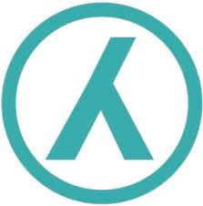

Wij oefenen op een traditionele manier door fysieke technieken op elkaar uit te voeren. De manier van oefenen is afgestemd op vaardigheid en leeftijd, je oefent altijd op eigen niveau. Hierdoor zijn wij toegankelijk voor alle leeftijden. Tweemaal per week zijn er beginnerslessen, op maandag en donderdag van 19:00-20:00. Er kan op ieder moment ingestroomd worden. Tijdens de beginnersles zijn ook gevorderden aanwezig als trainingspartner. De proefles is uiteraard gratis. De gevorderden lessen bestaan uit twee delen: lege hand technieken (tai jutsu) en wapen technieken (buki waza). Beide delen worden evenredig aangeboden. Tijdens deze lessen wordt het volledige curriculum behandeld. Deze lessen zijn toegankelijk vanaf 6e kyu. Gracie Amsterdam organiseert 4 seminars per jaar. Drie van deze seminars zijn met Lewis Bernaldo de Quiros, die de technische lijn van Takemusu Aikido in Europa vertegenwoordigt. Het vierde seminar is met één van de bevriende instructeurs uit het TAE netwerk.
Sportclubs in de buurt

VVA Spartaan
VVA/Spartaan is 1 juli 1988 ontstaan door de fusie van twee Amsterdamse voetbalverenigingen VVA (opgericht op 22 september 1901) en De Spartaan (opgericht op 20 april 1903). Deze twee verenigingen hebben beide niet alleen een lange maar ook roemrijke historie. Klik hier voor hun website
Tennispark Sloterplas
Tennispark Sloterplas is het gezelligste tennispark van Amsterdam met het zonnigste terras in een groene omgeving. Ze beschikken over 15 tennisbanen van topkwaliteit, gelegen aan de Sloterplas in Amsterdam. Daarnaast kun je ook banen los of per seizoen huren. Klik hier voor hun website
Klimhal Mountain Network Amsterdam
Mountain Network Amsterdam is gevestigd in ‘De Eretribune’, een multifunctioneel topsport en wooncomplex in Amsterdam. De klimmuur heeft een hoogte van 15 meter en de boulderhal is met zijn 200 m2 vloeroppervlak één van de grootste gekoppelde boulderhallen van Nederland. Beide wanden zijn opgebouwd volgens een uniek 3D-systeem. Daarnaast hebben zij een fitnessverdieping met fysiotherapie, hiermee kunnen zij jou een volledige sportervaring aanbieden. Klik hier voor hun website
Sportclub Sterkdoor Wilskracht
SDW (Sterk Door Wilskracht) is een laagdrempelige voetbalvereniging voor alle niveaus en iedere leeftijd. Ze hebben géén wachtlijst, lage contributie en ze zitten midden in de wijk Nieuw-West! Klik hier voor hun website

Tafeltennisvereniging Jovo
JOVO is een echte Amsterdamse tafeltennisvereniging die al bestaat sinds 1949. Zowel competitiespelers als recreanten kunnen tafeltennissen in een uitstekende accommodatie met bar. Klik hier voor hun website
Studenten Korfbal Vereniging Amsterdam
S.K.V. Amsterdam is in 2002 opgericht door een kleine vriendengroep en is in tien jaar tijd uitgegroeid naar een vereniging met ongeveer 70 enthousiaste leden. S.K.V. Amsterdam is naast een échte korfbalvereniging (met trainingen, wekelijkse wedstrijden en studententoernooien) ook een échte studentenvereniging. Klik hier voor hun website
Voetbalvereniging SDZ
Sportpark Transformatorweg bevindt zich binnen de ring A-10 in Amsterdam-West en beschikt over 3.5 kunstgrasvelden, allen voorzien van lichtmasten. Het sportpark vormt sinds 1971 de thuisbasis van de Amsterdamse Voetbal Vereniging S.D.Z (Samenspel Doet Zegevieren). Klik hier voor hun website
Yoga Vereniging Yagoy
Yagoy geeft Yoga geeft moderne yoga lessen tegen scherpe prijzen. Begin of verdiep je via hun maandelijkse thematische workshops en evenementen in Yagoy West of Yagoy Pijp! Klik hier voor hun website
Stichting Shin-Ju Karate-Do Amsterdam
Karateschool Shin-ju is in juli 2002 opgericht door Dimitra en Ruby Limneos. Shin-ju is het Japanse woord voor parel. Klik hier voor hun website
BJJ Purmerend
Zij geloven dat je het meeste leert als je plezier hebt. Dat je meer energie krijgt als je plezier hebt. En dat je beter presteert als je plezier hebt. Daarom staat plezier in de training bij hun voorop! Klik hier voor hun website